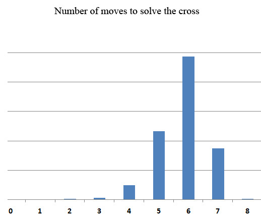

FAQ
FAQ GUIDE
GUIDE F2L
F2L OLL
OLL PLL
PLL BEGINNER's
BEGINNER'sCROSS

Cross is the first step of the Fridrich method for solving the Rubik's cube.
In this step 4 edges have to be solved to their correct positions.
Theory
Take a look at the graph on the right. It shows the number of moves that you need to make to solve a white cross.
Most interesting is the fact that most of the time the cross can be solved in 6 or less moves.
Color Choice
The most often chosen side to make a cross on, by convention, is white. Most people are thus said to make a 'white cross'.
However, there are a few people that are called color-neutral. This means that they first decide which cross looks easy to make, and then they make that cross. This approach saves about 1 move in the cross stage, but it is often argued that it is not worth doing it because of slower recognition times especially in F2L stage, because the color scheme is ever-changing.
There is yet one more class of people that make dual-color crosses. They choose to do either white or yellow cross. This decreases the number of moves in cross stage, but arguably doesn't change the F2L recognition times by as much.
This issue often leads to a lot of discussion, and there is no definite consensus on what cross color(s) are best to use.
Lars Vandenbergh analyzed this issue quantitavily and the whole page can be seen here. Here are the results summarized:
- Averge number of moves to solve white cross: 5.81
- Averge number of moves to solve dual cross: 5.39
- Averge number of moves to solve neutral cross: 4.81
Looking at the results I am personally convinced that it is best to choose one color and stick with it
Placement Choice
There is much more consensus on where you should solve your cross. Here are the variations that make at least some sense:
- Cross on top
- Pros: Easy for beginners because they can see their progress with the edges.
- Cons: Slowest variation of all. In the end of the cross you have to turn the cube over to begin solving the F2L (second stage), and this takes a lot of time. There is also the fact that you deprive yourself of valuable look-ahead time, because all the interesting stuff goes on in the last layer, opposite the cross layer.
- Cross on left
- Pros: Enables look ahead.
- Cons: None really. It is a good compromise between cross on top and bottom. Having said that, not many people make a cross on the left, possibly because the fingertricks are not that good for this variation.
- Cross on bottom
- Pros: Enables great lookahead, and also decent fingertricks. Most of the really good speedcubers solve the cross on bottom, and so should you.
- Cons: It may be a little akward for beginners at first because you cannot see your progress with the edges, and it is also hard to see if you accidentally screwed up. And if you do, it is guaranteed to be a huge setback.
Tutorials
Below is my tutorial on advanced cross techniques
And tips for making the cross on the bottom: